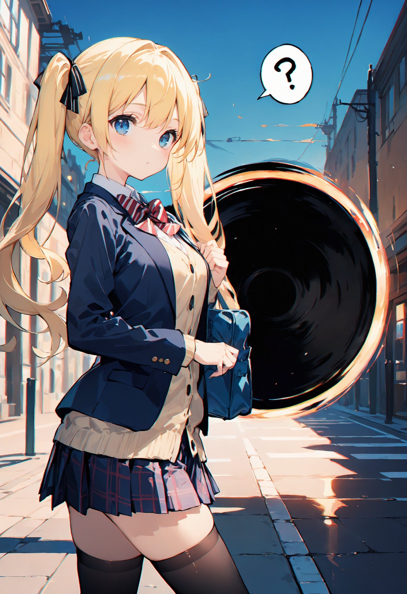

第1話
放課後、オレンジ色に染まる街並みを美桜ちゃんは歩いていた。 友人の美優ちゃんとたわいもない会話をしながら、学校帰りのルートを進む。
「ねえ、今日の宿題、めんどくさいよねー！」 美桜ちゃんがそうぼやくと、美優ちゃんが苦笑いを浮かべる。
「めんどくさいって言っても、ちゃんとやるんでしょ？」 「うーん……まあね。だってサボったら先生怖いし～」
そんな他愛のないやり取りが続く中、ふいに風がざわついた。 心地よい秋の空気が、突然、冷たいものに変わる。
「なんか急に寒くなったね？」 そう言って振り返る美桜ちゃんの背後に――黒く渦巻く奇妙な穴が浮かんでいた。
「美桜ちゃん、後ろ後ろーっ！！」 美優ちゃんが必死に叫ぶ。

「？」
美桜ちゃんが振り向いたその瞬間、渦はまるで彼女を狙ったかのように激しく回転を始めた。 周囲の風が一気に吸い寄せられ、落ち葉や小石が宙を舞う。
「うわっ、何これ！映画の撮影？！」 美桜ちゃんは半ば冗談交じりに言いながら渦に近づこうとするが、美優ちゃんが必死に腕を引っ張った。
「やめなよ！危ないってば！」 「だってこんなの見たことないし……うわっ！」
足元がすくわれたような感覚とともに、美桜ちゃんの体が渦に引き寄せられる。 吸引力はどんどん強くなり、美優ちゃんの手を振りほどくとそのまま渦の中へ――。
「きゃぁあああああ！！」
― この話はここまで ―